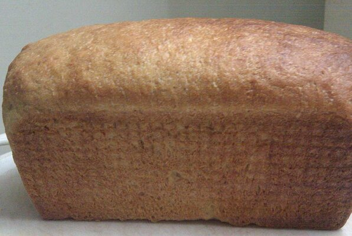

Wheat Bread

Description
This is a recipe for a delicious wheat bread. It is simple to make.
Ingredients
- 3 cups warm water (110 degress F/45 degrees C)
- 2 (.25 ounce) packages active dry yeast
- 1/3 cup honey
- 5 cups bread flour
- 3 tablespoons butter, melted
- 1/3 cup honey
- 1 tablespoon salt
- 3 ½ cups whole wheat flour
- 2 tablespoons butter, melted
Steps
- In a large bowl, mix warm water, yeast, and 1/3 cup honey. Add 5 cups white bread flour, and stir to combine. Let set for 30 minutes, or until big and bubbly.
- Mix in 3 tablespoons melted butter, remaining 1/3 cup honey, and salt. Stir in 2 cups whole wheat flour. Flour a flat surface and knead with whole wheat flour until not real sticky - just pulling away from the counter, but still sticky to touch. This may take an additional 2 to 4 cups of whole wheat flour. Place in a greased bowl, turning once to coat the surface of the dough. Cover with a dishtowel. Let rise in a warm place until doubled.
- Punch down, and divide into 3 loaves. Place in greased 9 x 5 inch loaf pans, and allow to rise until dough has topped the pans by one inch.
- Bake at 350 degrees F (175 degrees C) for 25 to 30 minutes; do not overbake. Lightly brush the tops of loaves with 2 tablespoons melted butter or margarine when done to prevent crust from getting hard. Cool completely.